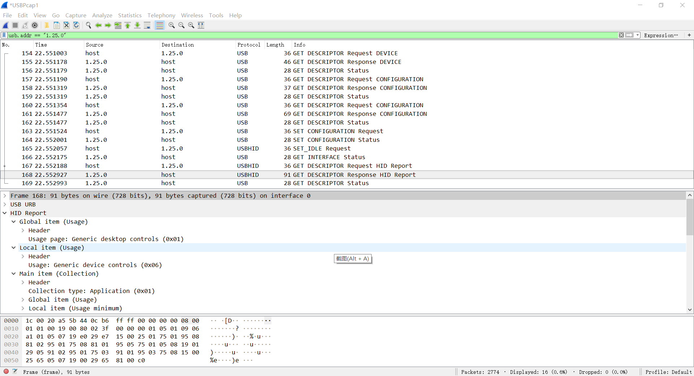
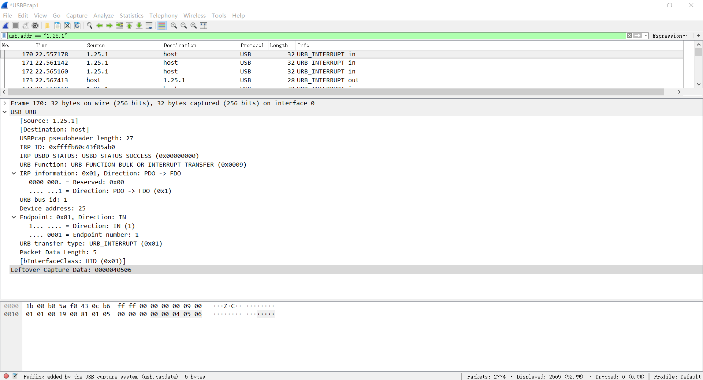
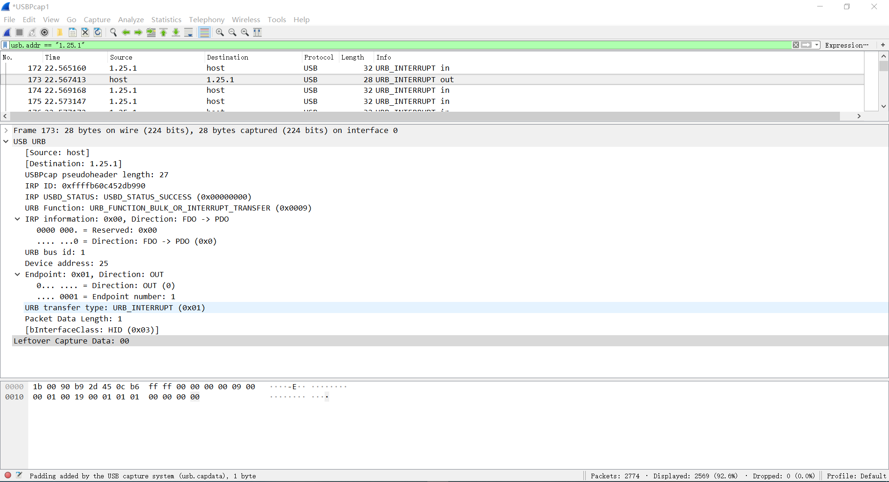

HID Keyboard
HID键盘示例
键盘的描述符共有8字节的输入报告和1字节的输出报告:
8字节输入报告：第1字节特殊按键，第2字节保留常量，第3-8字节普通按键。键值可以参考USB HID to PS/2 Scan Code Translation Table.
1字节输出报告：这1个字节总共用了5bits使用3bits常量来补足成1个字节。5bits用来点亮特殊键盘上的Led灯，比如键盘的大小写，数字键，小键盘的LED灯。
如果不给键盘配置OUT端点，那么键盘的1字节输出报告将由控制端点的SetReport进行传输。
参考文档
报告描述符生成器
Code Positon
C:\Cypress\USB\CY3684_EZ-USB_FX2LP_DVK\1.1\Firmware\hid_kb
HID 报告描述符
HIDReportDscr:
; 通用桌面键盘
db 05h, 01h ; Usage Page (Generic Desktop)
db 09h, 06h ; Usage (Keyboard)
db 0A1h, 01h ; Collection (Application)
; 按键值类型，输入，占用8bit * 1
db 05h, 07h ; Usage Page (Key codes)
db 19h, 0E0h ; Usage minimum (224)
db 29h, 0E7h ; Usage maximum (231)
db 15h, 00h ; Logical minimum (0)
db 25h, 01h ; Logical maximum (1)
db 75h, 01h ; Report size (1)
db 95h, 08h ; Report count (8)
db 81h, 02h ; Input (data, variable, absolute)
; 常量，也就是保留，占用8bit * 1
db 95h, 01h ; Report count (1)
db 75h, 08h ; Report size (8)
db 81h, 01h ; Input (constant)
; 灯类型，输出，占用1bit * 5
db 95h, 05h ; Report count (5)
db 75h, 01h ; Report size (1)
db 05h, 08h ; Usage Page (LED)
db 19h, 01h ; Usage minimum (1)
db 29h, 05h ; Usage maximum (5)
db 91h, 02h ; Output (data, variable, absolute)
; 常量，也就是保留，占用3bit * 1，填充前面的5bit，达到8bit
db 95h, 01h ; Report count (1)
db 75h, 03h ; Report size (3)
db 91h, 01h ; Output (constant)
; 按键值类型，输入，占用8bit * 3
db 95h, 03h ; Report count (3)
db 75h, 08h ; Report size (8)
db 15h, 00h ; Logical minimum (0) 每个字节的取值范围是 0~101
db 25h, 65h ; Logical maximum (101)
db 05h, 07h ; Usage page (key codes)
db 19h, 00h ; Usage minimum (0) 分别是键盘码 0~键盘码 101
db 29h, 65h ; Usage maximum (101)
db 81h, 00h ; Input (data, array)
db 0C0h ; End Collection
HIDReportDscrEnd:
HID Keyboard
[...省略]
void TD_Init(void) // Called once at startup
{
leds = 0xFF;
oldbuttons = 0xFF;
EP1OUTCFG = 0xB0; // valid, interrupt
EP1INCFG = 0XB0; // valid, interrupt
EP2CFG = EP4CFG = EP6CFG = EP8CFG = 0; // disable unused endpoints
// EZUSB_InitI2C(); // Initialize EZ-USB I2C controller
}
void TD_Poll(void) // Called repeatedly while the device is idle
{
if( !(EP1INCS & bmEPBUSY) ) // Is the IN1BUF available; 八字节的输入报文
{
// EZUSB_ReadI2C(BTN_ADDR,0x01,&buttons); // Read button states
buttons = 0x01;
// buttons &= 0x0F;
// if ((oldbuttons - buttons) != 0) //Change in button state
if ((buttons) != 0) //Change in button state
{
if (buttons & 1) //Shift
EP1INBUF[0] = 0;
else
EP1INBUF[0] = 2;
if (buttons & 2) //a
EP1INBUF[2] = 0;
else
EP1INBUF[2] = 4;
if (buttons & 4) //b
EP1INBUF[3] = 0;
else
EP1INBUF[3] = 5;
if (buttons & 8) //c
EP1INBUF[4] = 0;
else
EP1INBUF[4] = 6;
EP1INBUF[1] = 0;
EP1INBC = 5;
}
// oldbuttons = buttons;
}
if( !(EP1OUTCS & bmEPBUSY) ) // Is there something available; 1字节的输出报文
{
leds = 0xFF; //Turn all off
if (EP1OUTBUF[0] & 0x02) //Caps
leds &= 0xBF;
if (EP1OUTBUF[0] & 0x01) //Scroll
leds &= 0xF7;
if (EP1OUTBUF[0] & 0x04) //Num
leds &= 0xFE;
// EZUSB_WriteI2C(LED_ADDR, 0x01, &leds);
// EZUSB_WaitForEEPROMWrite(LED_ADDR);
EP1OUTBC = 0; //Rearm endpoint buffer
}
}
[...省略]
//-----------------------------------------------------------------------------
// Device Request hooks
// The following hooks are called by the end point 0 device request parser.
//-----------------------------------------------------------------------------
BOOL DR_GetDescriptor(void)
{
BYTE length,i;
pHIDDscr = (WORD)&HIDDscr;
pReportDscr = (WORD)&HIDReportDscr;
pReportDscrEnd = (WORD)&HIDReportDscrEnd;
switch (SETUPDAT[3])
{
case GD_HID: //HID Descriptor
SUDPTRH = MSB(pHIDDscr);
SUDPTRL = LSB(pHIDDscr);
return (FALSE);
case GD_REPORT: //Report Descriptor
length = pReportDscrEnd - pReportDscr;
AUTOPTR1H = MSB(pReportDscr);
AUTOPTR1L = LSB(pReportDscr);
for(i=0;i<length;i++)
EP0BUF[i]=XAUTODAT1;
EP0BCL = length;
return (FALSE);
default:
return(TRUE);
}
}
[...省略]
Wireshark Capture
Enumerate 
Interrupt IN 
Interrupt Out 